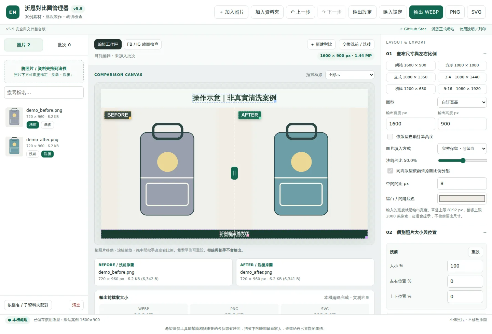
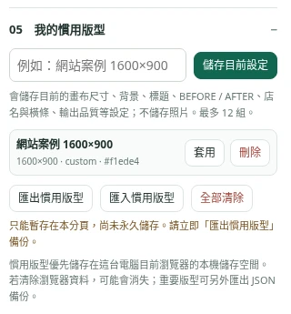
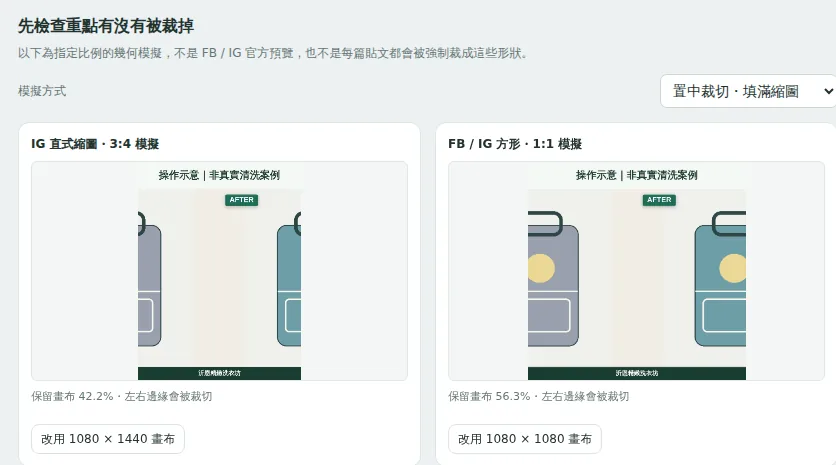

EN LAUNDRY · 操作手冊 · v5.9
洗前／洗後照片排版、社群比例檢查與批次輸出。先存幾個常用版型，之後把時間花在案例本身，而不是每次重新調整。

本手冊使用幾何測試素材；非客戶照片，亦非真實清洗成效。
「照片大小」改的是畫布內單張照片的呈現；「輸出尺寸」改的是完成後整張圖片的像素寬高。
上方「加入照片」可選多張；「加入資料夾」會讀取你指定的資料夾。從檔案總管拖入左側照片清單或空白區也可加入。第一次會依匯入順序暫配兩張，不會推斷哪張真的洗過。
| 你要調什麼 | 怎麼做 |
|---|---|
| 移動單張照片 | 在主預覽按住照片本體拖移。 |
| 放大／縮小照片 | 滑鼠放在照片區滾輪；也可改右側「大小 %」。100% 是自動適配大小。 |
| 兩邊不各占一半 | 拖中間綠色把手，或調「洗前占比」。同高自然模式可能先依原圖比例分配。 |
| 保留完整照片 | 選「完整保留・可留白」。空白處顯示你設定的底色。 |
| 讓照片填滿格子 | 選「填滿格子・可裁切」。注意鞋頭、提把、耳朵等邊緣。 |
| 指定整張大小 | 按常用尺寸；或選「自訂寬高」輸入精確數值。 |
1600×900、1080×1080、1080×1350、1080×1440、1200×630、1080×1920。這些是排版起點，不是所有平台的強制規格。
照片清單與預覽下方會顯示原圖的 px 和 KB／MB。完成圖的像素尺寸在工作區頂部；編碼容量則在下方「輸出前檔案大小」。介面的 KB／MB 以 1024 進位計算，也列出 bytes。
在右側「03 案例標題與標籤」開啟要顯示的元素。主預覽上的外框用於操作，外框、把手與輔助線不會輸出。
| 元素 | 操作與限制 |
|---|---|
| 標題 | 勾選顯示、輸入文字。可拖位置、字級、旋轉與鎖定；仍在獨立標題區內調整。 |
| BEFORE／AFTER | 各自拖移位置、調旋轉與框底色。字級、字重、文字色、圓角、不透明度、陰影目前共用。 |
| 店名文字 | 在畫布任意位置拖移，可改字級、旋轉及鎖定。年月由你手動指定，不讀取或推測洗滌日期。 |
| 店名背景橫條 | 獨立於店名；可改位置、寬高%、顏色、不透明度、圓角及鎖定。 |
拖文字或框的本體是移位置；拖其右下角的小控制點是改大小。照片則使用滾輪或大小數值。滑鼠放在文字／橫條上滾輪，不會縮放照片。
店名與底條重疊時，文字優先被選取。要移底條，拖沒有文字的區域；或暫時鎖定店名。移動店名不會帶著橫條一起走。
「留白／間隔底色」只改畫布露出的底色，不會替照片去背。「不透明度」100 表示實色，較低代表更透明；文字的清楚程度也會受照片背景影響。
鎖定主要避免畫布上的拖移與縮放；要調整時先解除鎖定。右側欄位／套版仍可改變設定，不應把鎖定當成防修改權限。
可用左上、右上、置中等快捷定位。拖文字接近 0／25／50／75／100% 時會吸附；它是比例參考，不會辨識照片物件或自動保證排版安全。
右側「05 我的慣用版型」最多 12 組。可以取名「網站案例 1600×900」「鞋包方形版」等，讓員工知道用途。
在清單按「套用」。照片不會被替換，個別照片的構圖仍需微調。標題和日期也會套回舊值，請務必改成本次案例。
同名儲存會先詢問是否覆蓋；刪除／全部清除也會確認。版型刪除不是照片刪除。

圖中顯示儲存被拒的降級提示；此時請用 JSON 備份。
| 功能 | 保存內容 |
|---|---|
| 匯出設定 | 一份目前樣式。不含照片及批次清單。 |
| 匯出慣用版型 | 整份已存版型清單，最多 12 組。 |
| 匯入慣用版型 | 會取代目前版型清單；已有資料時會先確認，不是自動合併。 |
JSON 上限 1 MiB。v5.9 會先驗證；格式錯誤時不覆蓋現有設定。陌生檔案仍不應直接信任。
點中間上方「FB / IG 縮圖檢查」，選「置中裁切」或「完整保留」。截圖例子中，橫向對比圖放入直式比例，兩邊主體會被裁掉，必須調整畫布或重新構圖。

這是幾何模擬，不是平台官方預覽；實際版位及裁切方式仍須發布前確認。
「預覽框線」可選中央 60%、1:1、3:4、4:5、1200:630、9:16 等。中央 60% 是留白參考，不是社群平台保證不裁切的區域。
| 格式 | 要點 |
|---|---|
| WEBP | 依品質滑桿編碼，先看實測容量與畫質。 |
| PNG | 保留完成畫布的無損編碼；不會修復原圖失焦。 |
| SVG | 內嵌整張 PNG，不是可拆解的向量設計稿。 |
按上方格式按鈕後，檔案交由瀏覽器下載；不會自動存回舊 BAT 的 output 資料夾。預览是縮小呈現，銳利化細節請再開輸出檔確認。
書包_before.jpg 對 書包_after.jpg；也接受 _洗前／_洗後。未明確命名的照片，同一資料夾恰好兩張時暫按檔名排序。不是按 EXIF 拍攝時間。自動配對的組合預設不勾選。
「套用至所有組」或「只套用勾選組」會保留各組圖片位置及案例標題，更新其他樣式後取消勾選，讓你重新檢查。不同照片比例可能需要不同大小，不能只套版就直接認定每組合格。
包含各組完成圖及 export_report.json。清單會記錄案例名稱、來源檔名／相對路徑、尺寸、容量與錯誤。不要把它當成可以還原所有編輯工作的專案檔；分享前也應檢查有無客戶資訊。
| 快捷鍵 | 動作 |
|---|---|
| Ctrl+Z | 上一步；在文字欄位內保留瀏覽器原生文字復原。 |
| Ctrl+Y／Ctrl+Shift+Z | 下一步。 |
| 照片取得焦點後，方向鍵 | 微移照片；Shift 加速。 |
雙擊物件本體可重設位置，雙擊右下控制點可重設相應大小。清空照片會一併清空操作歷史，因為來源已釋放；仍不會刪除電腦上的原始照片。
| 現象 | 處理方式 |
|---|---|
| 拖入照片沒反應 | 先用「加入照片」測試。確認副檔名與內容相符，並查看底部狀態或操作紀錄；HEIC／SVG／TIFF 請先轉成支援格式。 |
| 店名或底條拖不動 | 確認沒有鎖定。店名與底條各自選取；要拖底條時避開文字區域。 |
| 圖片很糊 | 先檢查原圖解析度、照片縮放倍數與對焦，不要只提高輸出尺寸或銳利化。 |
| 版型不見 | 確認是否換了瀏覽器、網址或檔名。使用 JSON 備份匯回。注意儲存被拒／無痕模式的提示。 |
| 下載檔找不到 | 查看瀏覽器下載紀錄；本工具不會自動寫回原始照片資料夾。 |
| 手改程式後所有按鈕失效 | v5.9 的腳本受 CSP hash 限制。修改 JavaScript 後須更新 hash，不要直接關閉防護。 |
工具正常流程不呼叫圖片上傳 API，也不覆寫原圖。線上載入仍會連到 GitHub Pages；點正式網站或 Star 會連到對應網站。版型是本機瀏覽器資料，不是加密保險箱。
請勿把客戶照片、訂單、Token、密碼、.env 或 SQL 備份提交到公開 GitHub。輸出檔名、模板文字與 ZIP 清單也可能暴露客資。
先匯出現有版型備份。ZIP 解壓後，把最外層資料夾裡的檔案與子資料夾上傳 repo 根目錄，覆蓋同名檔案；不要只上傳 ZIP，也不要讓 index.html 多包一層。詳細步驟見 docs/DEPLOYMENT.md。
SECURITY.md 只是回報政策。GitHub 私下漏洞回報仍需維護者自行開啟；本次沒有替你改 GitHub 或正式站設定。此包經過限定回歸測試，不代表零漏洞。
文件依本次 v5.9 交付程式編寫。瀏覽器儲存與 GitHub 設定依官方文件核對；實際部署狀態請由維護者確認。